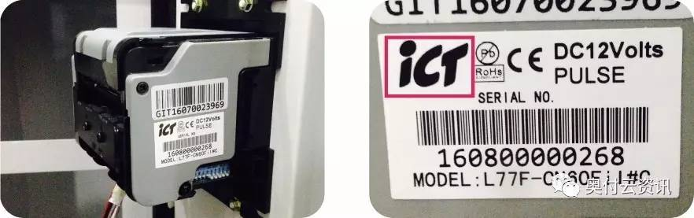

奥付云-ICT串口(RS232)纸钞盒安装教程
奥付云ICT串口纸钞盒优势：
1. 完善处理同时纸钞及线上（微信和支付宝）支付的冲突问题；
2. 缺币及机台故障时，自动禁止线上支付，放币或故障恢复后自动恢复支付功能；
3. 支付成功，但因信号等问题无下发出币指令自动退款。
4. 因网络原因指令处理超时（大于40秒），自动退款处理。
5. 安装后自动检测盒子接入是否正常。
（请在操作前，先投放任意纸钞，确定兑币成功后进行以下操作）
一、安装流程总述
-
确认ICT-RS232串口通讯方式
-
检查配件及连接
-
纸钞盒安装
-
供电接线及检测
二、确认ICT-RS232串口通讯方式
1. 确认纸钞机有“ICT”标签

2. 确认纸钞机设置为ICT串口通讯方式
ICT纸钞机背后有一个蓝色的4位拨码开关，其控制纸钞机的通讯方式（脉冲/ICT串口/MDB模式）。 请确认设置为如下的“ICT串口模式”： 请确认第2位及第3位拨码开关指向下方，即OFF状态 ：
（警告：以下内容仅为确认，不要随意切换。纸钞机通讯方式需要与设备主板/机台方向保持一致。否则会导致设备故障而无法兑币）

3. 请确认串通讯方式所使用的DB9标准接头。
RS232串口通讯方式一般在主板外边接口，使用DB9标准接头，以及纸钞机方向必定有2条接线（1条纸钞机供电线、另1条带DB9的标准接口线）。

三、检查配件及连接
1. 检查盒子标签确保为奥付云-ICT串口纸钞盒

2. 配件检查
1）. 奥付云-ICT串口纸钞盒1个
2）. DB9串口线（公母）1对
3）. 天线1条
4）. 供电投币线1条（5P端子转2个4P端子头）

3. 盒子连接
1）连接天线与投币线
配线投币线中的5P端子插入奥付云-ICT投币盒背部标识为“投币器出”的位置。

2）连接DB9公头配线（尾部）
DB9公头配线：其尾部为4P端子，连接到奥付云ICT串口纸钞盒上背部标识为“串口入”的（4P端子座）插口。串口入即纸钞机信号输入。

备注：稍后，DB9公头头部用于连接纸钞机的DB9接口母头
3）连接DB9母头配线（尾部）
DB9母头配线：其尾部同为4P端子，连接到奥付云ICT串口纸钞盒上背部标识为“串口出”的（4P端子座）插口。串口出即奥付ICT串口纸钞盒信号输入机台（设备主板）。

备注：稍后，DB9母头头部用于连接机台方向（主设备主板）。
4）完整的盒子连接线图

四 、奥付云ICT纸钞盒安装
1. 关闭设备/机台电源
为保障您与设备的安全，请先关闭设备/机台电源。
2、奥付云ICT纸钞盒连接纸钞机
作用说明：把纸钞机的线路接入奥付云盒子，监控线下营收及纸钞机或设备的异常状态。接线方式：拨出纸钞机连接线（DB9母头），对接奥付云ICT纸钞盒的DB9公头配线（建议用扎带十字扎、避免松动），如下图所示：


3、奥付云ICT纸钞盒连接机台（设备主板方向）
作用说明：把奥付云ICT纸钞盒的DB9母头，插入机台（设备主板）的插口，并上好螺丝，避免松动。


五 、供电接线及检测
1. 供电线说明
奥付云ICT纸钞盒使用原设备的投币器供电线供电，即12V输入电路。供电线存在以下三种情况：
1）原设备有投币器、且有投币器供电线；原设备无投币器、但有投币器供电线；
2）既无投币器、亦无投币器供电线（详见最后的其它说明）；
2、有投币器供电线的接线方式
拨出投币器供电线（4P），接入奥付云ICT纸钞盒背部标识为“投币入口”的4P端子座。（若有投币器时）然后把奥付云ICT纸钞盒5P转4P投币配线中的4P端子头插回投币器。


3、盒子通电检测（仅检测接线线路是否正确）
1）说明
设备/机台通电后，通过设备原有的机台投币器线供电（12V）给奥付云ICT串口纸钞盒。检测方式如下：

2）检测：
a)若大红亮不亮：代表盒子没通电，请检测12V投币器供电线或其他供电线（接入盒子背部标识为投币器入）；
b)若小绿灯不亮：代表盒子与机台及纸钞机通讯失败。按照本文的安装方式每b一步进行检查或重新安装；
c)若小红灯不亮：代表盒子未能连接奥付云后台，请检查天线是否有安装（必须）、用于通讯的SIM物联网卡（即手机卡）是否插入、请检测当地场地GSM/2G信号是否很差；
d)若大蓝灯不亮：确认下面的小红灯是否亮，若亮则可能灯片问题不影响使用；若下面小红灯不亮，代表盒子里的GPRS模块可能有问题。
3）后续处理说明：后续请看盒子激活流程
六 、另外接盒子供电线的方式
警告： 以下操作必须设备关电，并且断开电源线进行，如果可以，请专业电工处理。
若设备没有投币器线（用于12V供电给盒子）时，则可向奥付云公司申请1条接线连接到开关电源，如下：